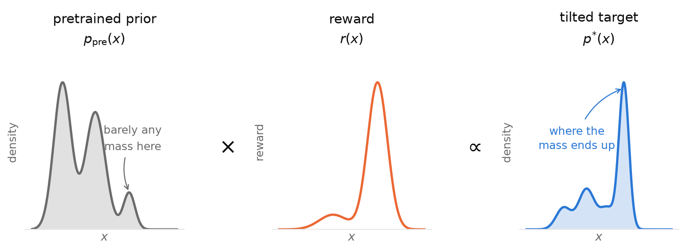
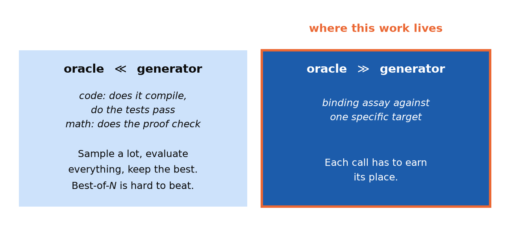
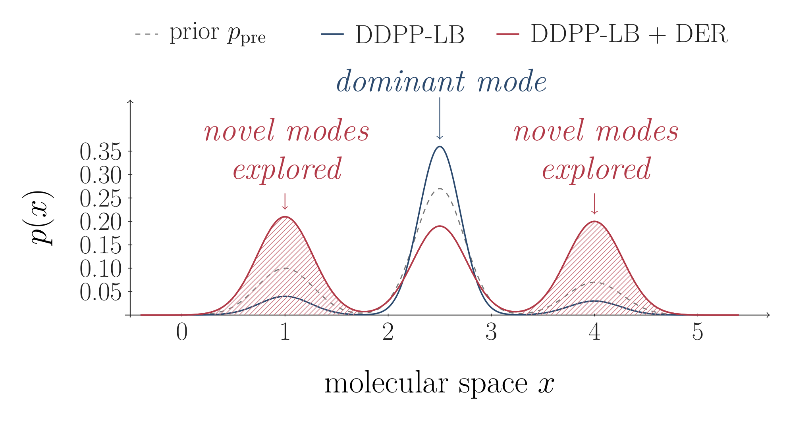
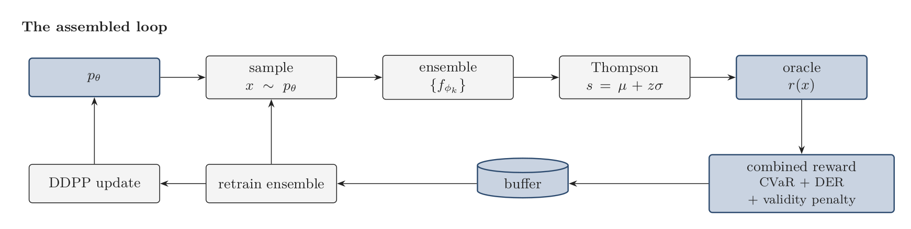
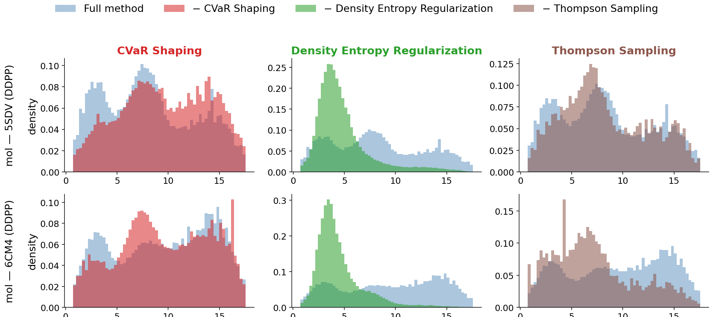
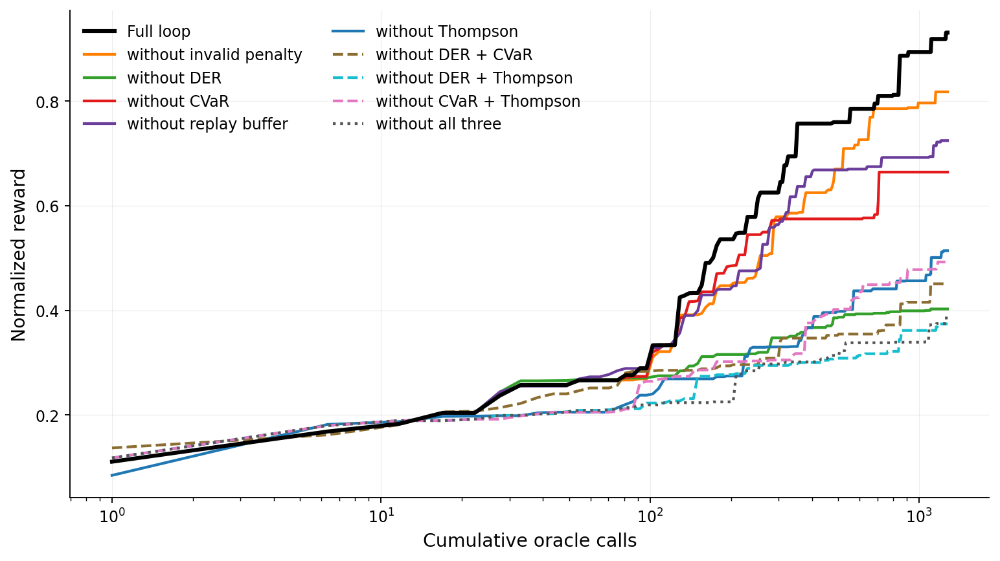
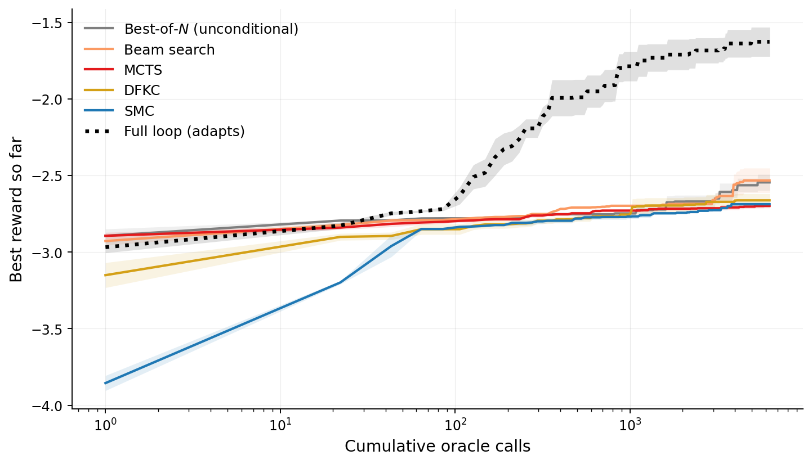

Better molecules, fewer experiments
A pretrained molecule generator is a bit like a very well-read chemist who has no idea what you're trying to make. It knows what drug-like molecules look like, so almost everything it proposes is plausible, and almost none of it binds your protein.
You can fix that if you can ask a question about each molecule it proposes: how well does this bind? The catch is that every answer costs something, and the better the answer, the more it costs. This post is about the paper I spent most of this year on, which asks a simple question: if you can only afford a few thousand answers, how should you spend them?
What we're actually trying to do
Call the pretrained generator $p_{\text{pre}}(x)$ and the score you care about $r(x)$. We don't want the generator's habits and we don't want the score maximized blindly; we want molecules that score well and still look like chemistry. A clean way to say that is to reweight the prior by the reward:
$$p^\ast(x) \propto p_{\text{pre}}(x)\, e^{r(x)/\beta}$$
Shrink $\beta$ and the target collapses onto the best molecules. Everything in the paper is some way of approximating $p^\ast$ without being able to evaluate $r$ more than a few thousand times.

Why the cost of one measurement decides everything
If an answer is nearly free, you don't need to be clever. Sample a million candidates, score them all, keep the best. That's why code and math get such good mileage from "sample a lot and check": a compiler or a proof checker is exact and instant.
Binding affinity is the opposite. A learned affinity model takes milliseconds, a structure-prediction run takes minutes, and a wet-lab assay takes weeks. Once the measurement is the expensive part, extra sampling can't buy you more of it, and the whole game becomes which candidates deserve a measurement, and how do I make each one count.

The first big choice is where the feedback goes. You can use it to select better draws from a frozen generator (search), or you can use it to change the generator so every later round starts from something better. We bet on the second. A search decision is used up the moment it's made; a gradient step compounds.
Four decisions in one loop
Once you commit to updating the generator, four design questions show up on every round. The literature has good answers to each one separately. Nobody had checked whether they work together, which is the experiment we ran.
1. Who gets measured? I'd have bet on "whichever candidate the surrogate model likes best," and that's the mistake: a surrogate trained on a few thousand points is confident exactly where you've already looked. We use Thompson sampling instead. The surrogate is an ensemble of ten small networks; for each candidate we draw one sample from its predictive spread and send the top few to the oracle. Where the ensemble disagrees, the draw is wide and the candidate can win; where it agrees, this reduces to greedy.
2. What do we learn from? Maximizing average reward optimizes the wrong thing, because you ship the best molecule, not the average one. We use a CVaR-style shaping: take the running 80th-percentile reward, and only reward samples above it, scaled up. The generator's gradient comes from the top fifth of what's been measured.
3. How far do we let it move? This is the one that surprised us. A KL penalty to the prior pulls the wrong way (you're explicitly trying to leave the prior), and a plain entropy bonus spreads probability around without caring where it goes. Instead we subtract the generator's own log-likelihood from the log-reward, $\log r(x) - \gamma \log p_\theta(x)$, which we call density entropy regularization. A molecule the model already samples often gets discounted, so the modes it has already found stop soaking up all the gradient.

4. What keeps it from breaking? Two things. A replay buffer, so a good molecule found early doesn't stop mattering once the sampling distribution moves on. And a validity penalty, because exploring off-prior mostly means exploring invalid strings. Without the penalty, validity collapses within the first hour as the model piles mass onto strange strings the surrogate happens to like.

What the experiments said
We ran nine tasks: six small-molecule binding targets and three protein-fitness tasks (GB1, CreiLOV, TrpB), five seeds each.
Every piece earns its place. Remove any single component and reward drops, and under the DDPP-LB fine-tuning objective density entropy regularization is the biggest of them: at 5,000 oracle calls the full loop reaches about 0.97 normalized reward and about 0.58 without it.
But the leave-one-out table hides the real story. When we ran the full factorial over density entropy regularization, CVaR and Thompson sampling, the three weren't independent. Starting with everything off, the mean best score is −1.06. CVaR alone takes it to −0.86, and Thompson alone to −0.80. Density entropy regularization alone reaches −0.43, and from there, adding the other two gets to +1.13. In other words, density entropy regularization opens up room away from the prior, and CVaR and Thompson only pay off once there's room to exploit.


The protein tasks barely move, and that's informative. On GB1, CreiLOV and TrpB, the same ablations are close to flat. Those generators are trained per family, so a high-fitness variant is already something the prior samples readily. There's no off-prior headroom for the density term to open, so the components that depend on it have nothing to exploit. That gives a rough rule you can apply before spending any compute: how far is what you want from what your generator already produces? If it's already in distribution, sample and select.
Adapting beats searching. Against five inference-time search baselines on a frozen generator (best-of-N, beam search, MCTS, discrete Feynman-Kac correctors, and SMC), the full loop reaches the best baseline's final score in about 58x fewer oracle calls averaged over the six molecules, and about 16x fewer on the protein tasks.

Where I'd be careful
A few honest caveats, because the 58x number is easy to over-read:
- It's a statement about budget, not ceiling: give search enough calls and it gets there too. It matters because nobody has enough calls.
- Our oracle is a learned affinity model, so this isn't evidence we found 58x better molecules, and we haven't validated any of them in a wet lab.
- We deliberately didn't tune the baselines, which is the right call for attributing where gains come from, but it means they sit below their ceilings.
- The ranking of components depends on the fine-tuning objective: under VIDD, Thompson sampling matters more than density entropy regularization. "Which knob matters" isn't a universal fact.
What I took from it
- Before you spend compute, check how far your target sits from what the generator already samples. If it's close, you don't need this.
- If it's far, get the density term right first. The rest of the machinery was waiting on it.
- Measure interactions, not just ablations. A leave-one-out table would have told us CVaR and Thompson sampling were marginal. They aren't; they just needed something else switched on.
This is a team paper: I shared first authorship with Ariel Dai, and the work was with Jason Yang, Riccardo De Santi, Daniel Khalil, Wenda Chu, Nate Gruver, Pranav Murugan, Alexander Goldberg, Maruan Al-Shedivat and Yisong Yue, across Caltech, ETH Zurich and Genesis Molecular AI. The full paper is on arXiv, the code is on GitHub, and the results are on Hugging Face.